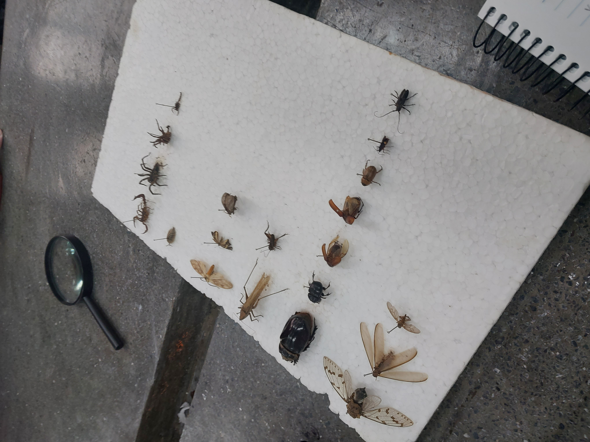

1° Ano
Data: Durante 2022
Durante o meu primeiro ano do ensino médio, vivi uma experiência marcante que ficará para sempre na minha memória. Foi um período de desafios, descobertas e muito aprendizado. Com dedicação e foco, consegui me destacar em todas as disciplinas e fui eleito o melhor aluno do colégio. Essa conquista foi um reflexo do esforço contínuo, da organização e do comprometimento com meus estudos. Ao longo do ano, não tirei nenhuma nota abaixo de 90, o que me trouxe um grande orgulho e uma sensação de dever cumprido. Além disso, esse ano também foi especial porque tive a oportunidade de conhecer novos amigos, com quem compartilhei momentos inesquecíveis e que contribuíram para tornar essa fase ainda mais especial.
2° Ano
Data: Durante 2023
No segundo ano do ensino médio, enfrentei novos desafios que exigiram muito mais de mim, especialmente com a introdução de matérias que antes não faziam parte da minha rotina. Essas novas disciplinas, embora desafiadoras, me ajudaram a expandir meus conhecimentos e me preparar melhor para o futuro. Um dos maiores marcos desse ano foi minha participação nas Olimpíadas de Química, onde me destaquei como o único aluno de escolas estaduais do Paraná a passar para a terceira fase. Além disso, tive a honra de conquistar a medalha de ouro nas Olimpíadas de Matemática do Paraná, um feito que me encheu de orgulho e me motivou ainda mais a continuar me dedicando. Esse ano foi crucial para o meu desenvolvimento acadêmico, consolidando meu interesse pelas ciências exatas e abrindo portas para novas oportunidades.
3° Ano
Data: Durante 2024
O terceiro ano do ensino médio tem se mostrado o mais desafiador até agora. A carga de estudos aumentou consideravelmente, com provas e vestibulares exigindo cada vez mais de mim. A pressão é constante, mas ao mesmo tempo, sinto que estou sendo moldado para os desafios que virão. Apesar da intensidade dessa fase, fui recompensado com uma conquista que me trouxe muita satisfação: a medalha de bronze nas Olimpíadas de Matemática do Paraná. Ao olhar para essa trajetória, sei que, ao final deste ano, sentirei falta dos momentos vividos no colégio, das amizades feitas e das experiências que, de alguma forma, me prepararam para o que está por vir.
Imagens
Sobre o Site
Criei este site para compartilhar e preservar minhas memórias escolares, durante o ensino médio. A ideia é relembrar cada fase da minha jornada acadêmica por meio de relatos e imagens, que representam de forma única os momentos marcantes dessa trajetória.
Quero refletir sobre como a escola teve um impacto tão importante na minha formação, tanto pessoal quanto acadêmica. As amizades, os desafios, as vitórias e até as dificuldades enfrentadas são partes fundamentais dessa experiência. Cada imagem e relato aqui são uma forma de reviver essas memórias que me acompanham até hoje.
Este site é uma maneira de valorizar cada etapa dessa jornada e as pessoas que fizeram parte dela, ajudando a construir quem sou hoje. Espero que, ao olhar para o passado, eu possa entender ainda mais o valor do processo educativo e o quanto ele é transformador.